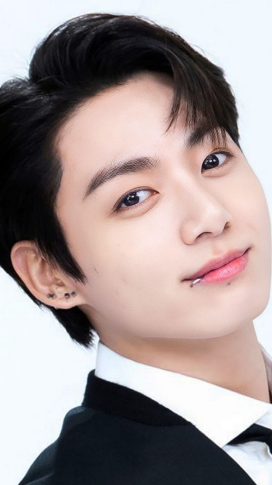
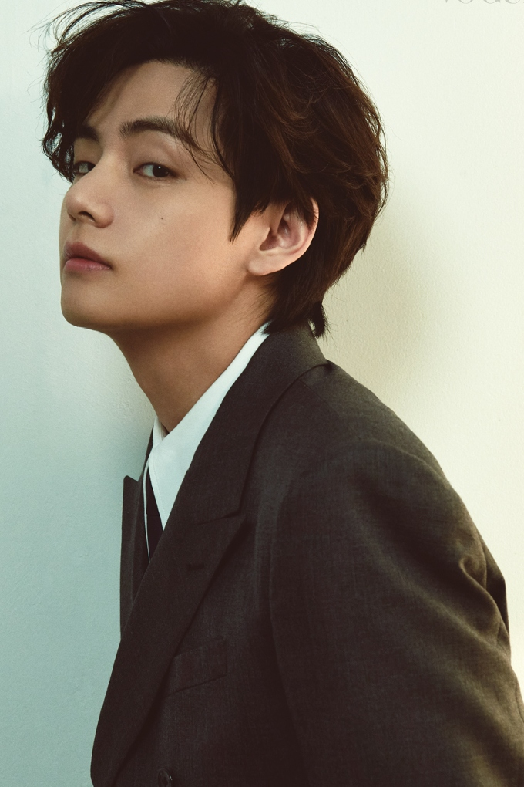
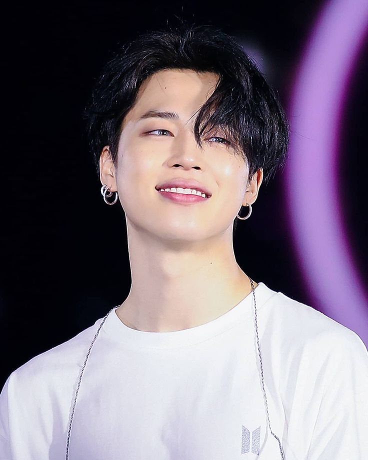
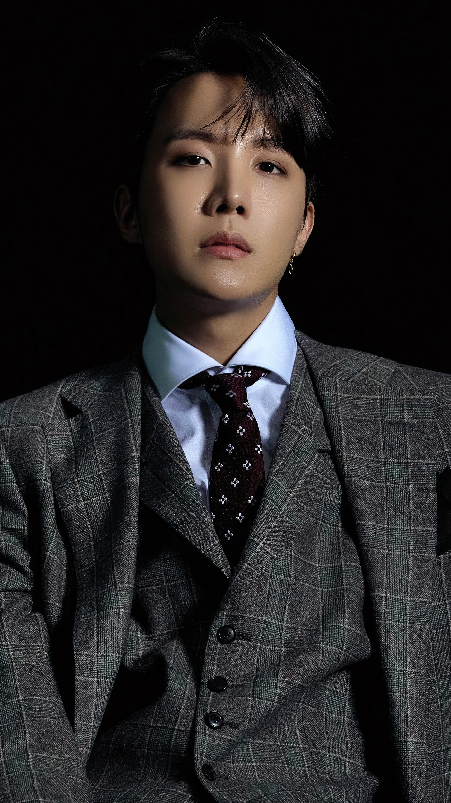
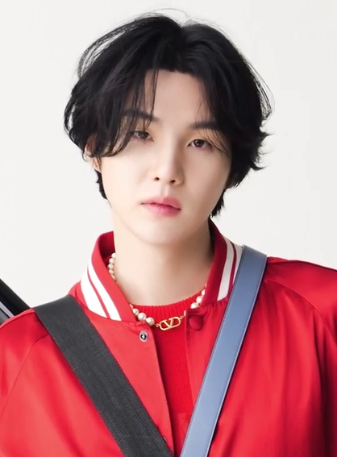
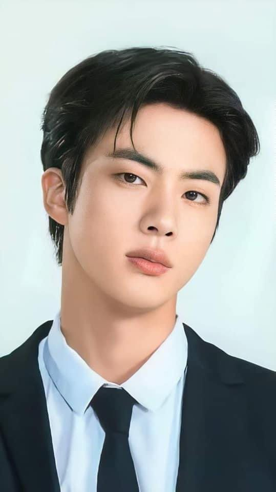
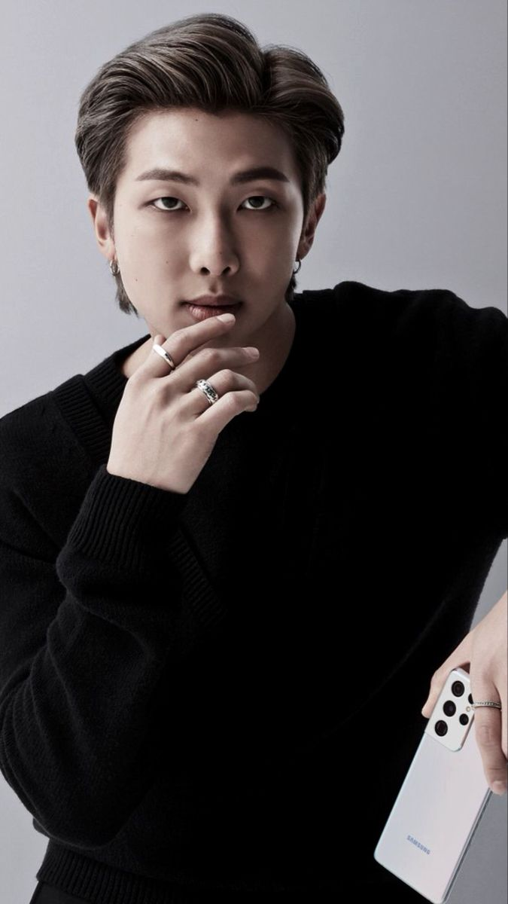

Members

This is Jeon Jungkook. Born in September 1st 1997, he is the youngest member of BTS. A common term used for the younger member of a group is called a Maknae. He audtioned on the talet show Superstar K and he was sent many offers even though he didn't win the talent show. He ended up joining HYBE when he saw RM since he thought that he was cool. And then they sent him to training while he was at school for singing and dancing. Since he is the youngest memeber when the are out on adventures you can tell that he is the youngest with how goofy and playful he is with his other members.

This is Kim Taehyung, his stage name is V. Born in December 30th 1995, He is the second youngest member and he originally audition with a friend but in the end only V was choosen. He as a kid had always wanted to pursue music and with the support of his dad started saxophone lessons at a young age and eventually adutioned for HYBE. With his knowledge of music he has helped to write some of the songs that they have especially in their first few albums they had made. He is considered the most playful and can be seen making the others laugh a lot with the help usually of Jungkook and Jimin.

This is Park Jimin. Born on October 13th 1995, he is the second in the "Maknae line". When he was younger he was in dance classes and it was his teacher that suggested he go audtion at a company since he is a good dancer. He is known as the "visual" he is sometimes in the center of the dances and your meant to focus on him since he is known for his good looks and his physique. He is also known as the kind one of the group and does his best to make his other members smile.

This is Jung Hoseok, stage name JHope. Born on February 18th 1994, He is one of the 3 rappers in the group and he is also the lead cherographer for their dances. He is known the most for his dancing even when he made some of his solo songs in each of his videos he is mainly dancing. Jhope before he joined HYBE was an undergound dancer for the group "Neuron" and started dancing at 4th grade and was widely known for his dancing skills, and eventually this lead to him being interested in music and audtioning at HYBE. He has a bright personality and is known as the "sunshine" of the group.

This is Min Yoongi, stage name Suga. Born on March 9th 1993, He is apart of the rapper line and he helps produces some of the beats on the tracks and he can also play piano. He started as an underground rapper with the name "Gloss", while he was underground he learned a lot about music from others and that helped with his drive to make music and produce his own stuff and with his knowledge he still uses it to help make songs for HYBE and BTS. He is known to be quiet and bashful but also the other members will go to him if they need help.

This is Kim Seokjin, Born on December 4th 1992, stage name Jin which is also just the name he goes by usually. He is the oldest member of the group. He is also known to be on funny TV shows and is also a Announcer in general for some events. JIn originally wanted to be an actor and persuede that for a bit and was even scouted but rejected it and a few years later he joined HYBE orignally as an actor but ended up becomign an idol trainee. He is known as the "mom" of the group and is very charismatic and has a very bright personality.

This is the leader of BTS Kim Namjoon, stage name RM. Born on September 12th 1994, He is the 3rd rapper in the rap line and his stage name was originally Rap Monster but he liked the abbriviated verse much more and has kept it as RM. He was an underground rapper named Runch Randa and then he joined HYBE in 2010. RM is the only member that is fluent in english adn he learned english by watching the show "Friends". RM also started song writing at the age 11 and would amke lyrics and show his friends which helped him persue music even more. Rm is known as the "Dad" of the group since he has to keep eeryone in line and with the Maknae line there is plenty of funny moments of them messing with him.